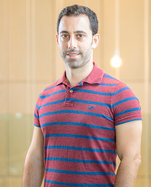

Orbs is Live on Google Cloud!
| May 6, 2021
When Decentralized Finance Meets the Traditional System
Had someone predicted any of the above only a few months ago (let alone more than a year ago...), she may have been laughed off of her blog...
| May 5, 2021
Orbs Staking is now available on the Trust Wallet mobile app!
| May 4, 2021
Orbs Update April 2021
| May 2, 2021
Orbs is now live on PancakeSwap!
In a [recent post](https://www.orbs.com/orbs-is-now-live-on-binance-smart-chain-via-anyswap-cross-chain-bridge/) we announced that the ORBS token is now available on Binance Smart Chain (BSC) using [multichain.xyz](https://multichain.xyz/) by Anyswap as a cross-chain bridge between Ethereum and BSC. In that same post, we also examined the meteoric rise of the BSC chain in the DeFi space and compared it to the rival DeFi ecosystem built on Ethereum.
| Apr 30, 2021
Bibox Exchange Lists Orbs Token (ORBS)
Bibox exchange has officially announced the listing of ORBS, the native token of the Orbs network. The following trading pairs are now available on Bibox: ORBS/USDT, and ORBS/ETH.
| Apr 30, 2021
Orbs and Krystal Announce a Partnership Focused on DeFi
Orbs an Israeli project developing a free, open-source, public blockchain infrastructure offering developers a proper mix of performance, cost, security and ease of use, and [**Krystal**](https://krystal.app/), a wallet for storing and exchanging cryptocurrency, earning passive income and accessing various DeFi applications in one place, announced a mutual cooperation and collaborations in the field of Decentralized Finance (DeFi).
| Apr 29, 2021
What Elite Capture means - and why it should enrage you
When I first heard about blockchain I thought it was going to change the world. I was certain that the ability to transfer an asset with complete transparency was going to leapfrog foreign aid and charitable giving from the archaic systems that are currently in place - into systems that are capable of accounting for every last dollar given.
| Apr 28, 2021
Orbs Staking is now available on the Status Wallet mobile app!
| Apr 27, 2021
ORBS is now live on Binance Smart Chain Via AnySwap Cross-Chain Bridge!
| Apr 23, 2021
P2PB2B Exchange Lists Orbs Token (ORBS)
| Apr 22, 2021
Orbs Tetra Staking is now available on imToken Wallet!
Tetra, the official staking wallet of the Orbs project is now available on mobile!
| Apr 21, 2021
Orbs Team Updates
| Apr 19, 2021
Orbs is Live on Microsoft Azure!
| Apr 16, 2021
Coinsbit Exchange Lists Orbs Token (ORBS)
| Apr 14, 2021
Orbs is Available on ENS (Ethereum Naming Service)
| Apr 14, 2021
Orbs Swaps and Staking Now Available on MetaMask Wallet!
| Apr 13, 2021
Single Sided-Farming on Any DEX Via Orbs Liquidity Nexus — Part 3
| Apr 12, 2021
Tetra staking Wallet by Orbs Now on Mobile!
| Apr 9, 2021
The Orbs New Merchandise Shop is Now Live!
| Apr 9, 2021
Orbs Live on Amazon - AMI Published by AWS Marketplace
| Apr 8, 2021
Single Sided-Farming on Any DEX Via Orbs Liquidity Nexus — Part 2
| Apr 7, 2021
Indodax Exchange Lists Orbs Token (ORBS)
(/assets/img/blog/indodax-exchange-lists-orbs-token-orbs/photo_2021-04-06_09-36-19-1030x579.jpg)
| Apr 6, 2021
Improving Supply Chain with Blockchain
(https://www.youtube.com/watch?v=_jOy17fuzy8&t=2670s)_”_. I was asked to discuss the value add that blockchain could provide for supply chains during the pandemic. An apt topic for discussion, as during the last year corona has jarred many supply chains to their core.
| Apr 4, 2021
ORBS Is Now Available on Blockfolio!
(/assets/img/blog/orbs-is-now-available-on-blockfolio/photo_2021-04-04_13-50-19-1030x579.jpg)
| Apr 4, 2021
Gate.io Exchange Lists Orbs Token (ORBS)
(/assets/img/blog/gate-io-exchange-lists-orbs-token-orbs/EyBNTZEWgAAAyxk-1030x515.jpeg)
| Apr 3, 2021
ORBSがFTX取引所に上場しました
(/assets/img/blog/orbsftx/photo_2021-04-01_22-13-11-1030x591.jpg)
| Apr 2, 2021
FTX Exchange Lists Orbs Token (ORBS)
(/assets/img/blog/ftx-exchange-lists-orbs-token-orbs/photo_2021-04-01_22-13-11-1030x591.jpg)
| Apr 2, 2021
Single Sided-Farming on Any DEX Via Orbs Liquidity Nexus — Part 1
| Apr 1, 2021
Latoken Exchange Lists Orbs Token (ORBS)
(/assets/img/blog/latoken-exchange-lists-orbs-token-orbs/photo_2021-03-29_13-22-20-1030x579.jpg)
| Mar 30, 2021
KuCoin Exchange Lists Orbs Token (ORBS)
(/assets/img/blog/kucoin-exchange-lists-orbs-token-orbs/photo_2021-03-24_14-22-48-1030x579.jpg)
| Mar 26, 2021
Introducing Orbs Liquidity Nexus — Liquidity as a Service
(/assets/img/blog/introducing-orbs-liquidity-nexus-liquidity-as-a-service/1_b1GMs87GwaJSdKLAY9i-dw-1030x434.png)
| Mar 23, 2021
Bithumb Announces ORBS Staking
(/assets/img/blog/bithumb-announces-orbs-staking/photo_2021-03-22_14-00-38-1030x438.jpg)
| Mar 22, 2021
Moonstake Partners with Hybrid Enterprise-Grade Blockchain Orbs to Soon Provide Full-Scale Support for Orbs Universe
| Mar 16, 2021
Orbs Update March 2021
| Mar 14, 2021
Orbs and Flipside Crypto Team Up to Launch the Orbs Community Console
| Mar 9, 2021
Orbs Update February 2021
| Feb 15, 2021
Orbs Featured on Staking Rewards
(https://www.stakingrewards.com/), has added the ORBS token to their platform!
| Feb 1, 2021
Orbs Update January 2021
| Jan 17, 2021
Orbs and Binance Team Up to Launch DeFi Accelerator
| Jan 11, 2021
Optimizing Ethereum Gas Costs for Orbs Delegators
Occasional high gas fees on Ethereum can inflict heavy costs on Orbs Delegators when executing transactions in the Orbs PoS mechanism, if done without preplanning. With a few simple steps, Delegators can significantly reduce losses incurred by these high gas prices.
| Jan 6, 2021
How to choose an Orbs Guardian
| Dec 30, 2020
Blockchain to Eliminate Voter Fraud
including solid advice on how to address concerns of domestic voter fraud. And yet, here we are again. Sadly, there have been multiple instances of fraud claims in America across the years:
| Dec 17, 2020
Orbs Update December 2020
In this update:** Orbs PoS V2.5 Official Launch ⁂ Orbs DeFi ⁂ KBW 2020 ⁂ State of the Network ⁂ Media Highlights ⁂ Team Updates
| Dec 7, 2020
Getting Ready for Round 7 of Orbs Rewards Distribution
The Orbs network launched on March 28th, 2019. The Orbs network relies on all of the participants in the proof of stake ecosystem to provide for the security and operation of the network.
| Dec 2, 2020
Orbs PoS V2.5 Official Launch!
It's finally here, the moment we’ve all been waiting for -
| Nov 30, 2020
Tetra Deployment Announcement
Hi all -
| Nov 19, 2020
Blockchain System to report child abuse
| Nov 9, 2020
Orbs PoS V2.5: The Age of Guardians is here!
It’s official!
| Nov 9, 2020
Orbs Update November 2020
In this update:** DeFi Ecosystem Grant Program ⁂ Locking of Team’s Tokens ⁂ KBW 2020 ⁂ State of the Network ⁂ Orbs on CoinGecko ⁂ Media Highlights ⁂ Meet the Orbs Team Vlog
| Nov 3, 2020
Does DeFi Hold a Promise for the Unbanked?
With the rise of cryptocurrencies in the last few years, also came the increased optimism that billions of the global unbanked population would finally have an inclusive financial solution.
| Nov 2, 2020
Grant Approved: Paradigm
| Oct 13, 2020
Orbs Update October 2020
In this update:** Orbs PoS V2.5 ⁂ Locking of Team’s Tokens ⁂ DeFi Ecosystem Grant Program ⁂ State of the Network ⁂ Biz Dev Overview ⁂ Media Highlights ⁂ Meet the Orbs Team Vlog ⁂ Holiday Greetings
| Oct 5, 2020
Orbs Token Integrity
Lately, the Orbs team has been getting a lot of questions from people wondering about various tokens with similar names to Orbs that are out there in different DEXs and DEFI projects. This post will clarify the situation and serve as a resource to help the community avoid confusion as they do their own due diligence on the tokens they interact with.
| Oct 2, 2020
6th Orbs Rewards Distribution: Summary
On September 30, 2020, Orbs network rewards distribution occurred, as described in the following post.
| Oct 1, 2020
V2.5 UPDATE - Combating the Gas Storms
| Sep 24, 2020
The Orbs Project: Overview of Enterprise Projects and Partnerships
| Sep 18, 2020
Locking of Team Tokens
(https://www.orbs.com/orbs-token-distribution/), at the time of the Orbs Token Distribution Event (“TDE”) on March 28, 2019, 20% of total supply was allocated to the team and founding partners. This pool had a vesting schedule of 36 months and a six-month initial lock-up period. During the almost 18 months since the TDE, the Orbs founders and team have not removed any tokens from the team pool.
| Sep 16, 2020
Getting Ready for Round 6 of Orbs Rewards Distribution
The Orbs network launched on March 28th, 2019. The Orbs network relies on all of the participants in the proof of stake ecosystem to provide for the security and operation of the network.
| Sep 14, 2020
Blockchain-based Health Immunity Passport
COVID-19 has had a devastating global impact. Travel and tourism industries have been particularly crippled by the virus, with no near term end in sight. Also concerning is the understanding that this will probably not be the last time that a global pandemic will affect all aspects of life for the world’s population. There is, or there should be, an internalization that if the world is to remain open, it needs to be prepared. Some kind of systematic solution is needed that will assist the global community to live through a pandemic without a mass closing of borders.
| Sep 13, 2020
Orbs Update September 2020
In this update:** DeFi, DeFi, DeFi ⁂ Orbs Ecosystem Grant Program ⁂ Age of Guardians ⁂ State of the Network ⁂ Previews and Teasers ⁂ Hexa Foundation ⁂ Media Highlights ⁂ Meet the Orbs Team Vlog
| Sep 6, 2020
Blockchain against Child Abusive Imagery
Recently, Israel was shaken to the core from a heinous gang rape of a sixteen year old girl. As the investigation unfolds, reports of images and videos of the crime surface. Sadly, this type of crime and the documentation of it, occurs in every country. Survivors of sexual violence face even more emotional damage due to the existence of digital imagery of the crime that took place. Videos and photos are forwarded and posted on instant messaging and social media, and often cloud platforms are helpless (or choose not) to do anything to stop this.
| Aug 26, 2020
Exploring DeFi with the Orbs Grant Program
In the last 6 months, the entire Orbs team has been hard at work on Orbs V2 - “The Age of Guardians”. This was a huge undertaking from both a technology development and business perspective. This very substantial 2.0 release improves on almost every aspect of the project - from the Proof-of-Stake incentives model, to a tighter integration with Ethereum and a revamped core architecture. I’m very excited that V2 has recently entered a public beta phase where Guardians are already running the new codebase!
| Aug 18, 2020
Orbs PoS V2: The Age of Guardians - PoS V2 Benefits Over V1
| Aug 16, 2020
Orbs Update August 2020
In this update:** Orbs PoS Universe: The Age of Guardians ⁂ New Validator ⁂ ORBS Staking ⁂ Tech Updates ⁂ Online Meetup ⁂ Media Highlights ⁂ Q&A with Tal Kol ⁂
| Aug 11, 2020
Ensuring visibility and accountability - How President Macron can really bring change to foreign aid
| Aug 10, 2020
Guardians of Blockchain: Q&A with Orbs Co-founder Tal Kol
(/assets/img/blog/guardians-of-blockchain-qa-with-orbs-co-founder-tal-kol/Tal-Kol-Orbs.jpg)
| Jul 14, 2020
Orbs Update July 2020
In this update:** Orbs PoS Universe ⁂ New Locking Feature ⁂ New Validator ⁂ Media Highlights ⁂ Exciting Teasers ⁂ Return to Office ⁂ Nate’s Farewell
| Jul 12, 2020
5th Orbs Rewards Distribution: Summary
On July 06, 2020, Orbs network rewards distribution occurred. This post summarizes the process and provides resources that can be used by any interested party to review and validate the calculation and distribution itself.
| Jul 8, 2020
Getting Ready for Round V of Orbs Rewards Distribution
The Orbs network launched on March 28th, 2019. The Orbs network relies on all of the participants in the proof of stake ecosystem to provide for the security and operation of the network.
| Jun 16, 2020
Track & Trace Solution Built on Orbs
| May 11, 2020
Orbs Staking Promotion Summary
| May 4, 2020
Orbs Update April 2020: Recap
Welcome back to our monthly recap everyone!
| Apr 30, 2020
MetaMask Security Overview and Connecting to Tetra Wallet
Hey everyone!
| Apr 23, 2020
Introducing Locking When Staking ORBS
| Apr 7, 2020
The New ORBS Locking Mechanism
| Apr 6, 2020
Orbs Technology Update April 2020
| Apr 2, 2020
4th Orbs Rewards Distribution: Summary
On March 25, 2020, Orbs network rewards distribution occurred. This post summarizes the process and provides resources that can be used by any interested party to review and validate the calculation and distribution itself.
| Mar 25, 2020
Getting Ready for Round IV of Orbs Rewards Distribution
The Orbs network launched on March 28th, 2019. The Orbs network relies on all of the participants in the proof of stake ecosystem to provide for the security and operation of the network. There are currently 20 registered Guardians and 16 Validators running in production. There are now over 1700 Delegators participating in the Orbs PoS ecosystem.
| Mar 18, 2020
Orbs Update March 2020
Welcome back to our monthly recap everyone!
| Mar 16, 2020
Private vs Public Blockchain
| Feb 26, 2020
My time at the EthDenver Hackathon
I attended EthDenver to represent the Orbs team. Both the BUILDWeek and the conference that followed have been a blast, with many great talks and tech showcases. It was a great pleasure to talk and learn with fellow attendees.
| Feb 24, 2020
Orbs Technology Update February 2020
 Noam BergFeb 19, 2020
Orbs’ Activity in the US Market
| Feb 12, 2020
Orbs Update January 2020
| Jan 31, 2020
Orbs and the Communications Business Automation Network (CBAN)
(https://interactive.itwglf.com/ITW-Global-Leaders-Forum) (Global Leaders Forum), the main collaboration forum for the wholesale telecom business. Backed by some of the biggest telecom carriers globally, including names like Orange, Deutsche Telekom, and Telefonica, CBAN was jointly developed with a group of both telecom and blockchain technology providers.
| Jan 16, 2020
Hexa Foundation's 2020 Vision for Blockchain-Led Social Impact
| Jan 12, 2020
Orbs Technology Update January 2020
Highlights:** Ver 1.3.5 released ⁂ A flow that identified a bug ahead of time ⁂ PoS architecture research ⁂ Onboarding of applications & new virtual chains ⁂ New monitoring tools
| Jan 9, 2020
3rd Orbs Rewards Distribution: Summary
On December 25, 2019, Orbs network rewards distribution occurred. This post summarizes the process and provides resources that can be used by any interested party to review and validate the calculation and distribution itself.
| Dec 26, 2019
How an Open Blockchain Standard Can Fix the Ills of Social Media
(https://www.linkedin.com/in/danny-brown-wolf-6346b242/), Head of Partnerships at Orbs and COO at Hexa Foundation_
| Dec 25, 2019
Orbs Network — v1.3.6 fixes
(https://www.orbs.com/getting-ready-for-round-iii-of-orbs-rewards-distribution/).
| Dec 19, 2019
Getting Ready for Round III of Orbs Rewards Distribution
| Dec 12, 2019
Orbs Update December 2019
In this update:** Orbs team speaks to US Congress ⁂ Developer Feedback ⁂ Podcast, Messari and BlockTV Interviews ⁂ Orbs Rewards Incoming ⁂ Sey Chain: Yes24 Partnership
| Dec 11, 2019
Sey Chain: Partnership between YES24 & Orbs
(/assets/img/blog/sey-chain-yes24-partnership/7-01-1500x430.jpg)
| Dec 4, 2019
The Blockchain-Based Solution to SNAP Fraud
| Nov 28, 2019
Evangelizing Blockchain to the US Congress
Earlier this month, I represented the Orbs team in Washington DC for “Demo Day on the Hill”. The event was organized by the [Global Blockchain Business Council](https://gbbcouncil.org/) in conjunction with [The Congressional Blockchain Caucus](https://soto.house.gov/media/press-releases/rep-darren-soto-named-co-chair-congressional-blockchain-caucus).
| Nov 26, 2019
Developing on Orbs: Interview with UN Hackathon Winners
Last month in New York**, the Global Business Blockchain Council [hosted a hackathon event](https://medium.com/@GBBC/the-gbbc-hosts-hackathon-showcasing-how-blockchain-technology-can-be-used-to-advance-un-sdgs-67855f76a010) to demonstrate and discover the ways blockchain technology can be used to advance the [United Nations 2030 Sustainable Development Agenda](https://www.un.org/sustainabledevelopment/development-agenda/). Several leading blockchain networks including Microsoft, Bitfury, JPMorgan’s Quorum, and Orbs were made available to participants by providing them with the tools and resources to build their proposed solutions. You can read more about Orbs’ experience with the event in the [afterthought blog post by Jonathan Levison](https://www.orbs.com/un-hackathon-afterthought/). The hackathon’s winning solution was eventually built on the Orbs Network. In an effort to learn lessons for the platform from a developer’s outsider perspective, I set out to question David Acton of the winning team Dynamic Digital Cooperatives about his experience building an app on the Orbs network.
| Nov 25, 2019
Orbs Technology Update November 2019
Highlights:** Ver 1.2.2 released ⁂ New Staking scheme research complete ⁂ New stress & endurance testing suite ⁂ New Reputation feature ⁂ New demos and status pages ⁂ More developers contributing
| Nov 18, 2019
The Sweet Spot | SFBW Blog
On one hand, there is this utopian vision of the decentralized world: A free market in which decisions are pure reflections of parties’ will, where there are no fees and no cut, no friction, and no middlemen involved between two trustless sides. On the other hand, there is the world we live in; the world where middlemen rule, known by most as simply 'the marketplace' (companies like eBay, Uber, Yelp), who are getting bigger and more efficient every day, deepening their control over our day to day life.
| Nov 17, 2019
Orbs Update November 2019
In this update:** San Francisco Blockchain Week ⁂ SecurePro Partnership ⁂ New: Demos Page ⁂ Co-Founder Podcast Interview ⁂ Orbs Speaks to Congress ⁂ World Economic Forum in Dubai
| Nov 6, 2019
Orbs Update October 2019
In this update:** U.N Hackathon Win! ⁂ Tel Aviv Blockchain Week ⁂ Block TV Founder Interview ⁂ ORBS on Metamask ⁂ Blockchain Education Webinar ⁂ New Orbs Center in Korea ⁂ Enterprise Use-Case Panel ⁂ KOSDAQ Delegation ⁂ Korea Blockchain Week ⁂ Blockchain Bridge SF⁂ Orbs Rewards Distribution: Round 2 ⁂ Mousebelt alliance
| Oct 5, 2019
GBBC's UN Hackathon: Afterthought
(https://gbbcouncil.org/) for a hackathon aimed at solving, or “hacking” sustainable development goals.
| Oct 3, 2019
Orbs Technology Update September 2019
Ok gang, here's a breakdown of the technology highlightsfrom Orbs contributors during this past month. Feel free to reach out to any particular contributor for more information:
| Sep 26, 2019
2nd Orbs Rewards Distribution: Summary
_On September 25, 2019, Orbs network rewards distribution occurred. This post summarizes the process and provides resources that can be used by any interested party to review and validate the calculation and distribution itself._
| Sep 25, 2019
Orbs Update September 2019
Alright, everyone! August has been a relatively quiet month for many of us, and yours truly is happy to watch his colleagues return from vacations all sunburned and happy. This post is going to be a quick flash update, so you know what has been happening while you were out sipping lemonade:
| Sep 8, 2019
A Hybrid Consensus Model for Voting: Taking a Cue From Indonesia
(https://www.orbs.com/the-blockchain-dichotomy-and-an-architecture-to-overcome-it/) and explained how the Orbs Network’s’ Hybrid consensus enables enterprise adoption of a public blockchain. The separation of block producers and validators allows organizations to keep control over their blockchain application while fulfilling blockchain’s role in generating trust. This hybrid two-tiered consensus is the architectural key to bridge the app/dapp divide.
| Sep 8, 2019
Getting Ready for Round II of Orbs Rewards Distribution
The Orbs network launched on March 28th, 2019. The network relies on all of the participants in the proof of stake ecosystem to provide for the security and operation of the network. There are 18 active Guardians currently registered and 15 Validators running in production. There are now over 1650 Delegators participating in the Orbs PoS ecosystem.
| Sep 3, 2019
Bitcoin’s Unusual Property Rights
_This is a guest post by Professors Neil Gandal (Berglass School of Economics, Tel Aviv University) and Joshua Gans (Rotman School of Management, University of Toronto), advisors to the Orbs project._
| Aug 27, 2019
Orbs R&D Update August 2019
(https://www.orbs.com/orbs-update-august-2019/) I wanted to keep everyone in the loop regarding the R&D progress being made by Orbs contributors. Here is a breakdown of some of the things accomplished during the past month.
| Aug 18, 2019
Orbs Update August 2019
| Aug 9, 2019
Bitcoin Vs. Other Cryptocurrencies: A Different Pattern This Time Around?:
_This is a guest post by professors Neil Gandal (Berglass school if economics, Tel Aviv University) and Joshua Gans (Rotman School of Management, University of Toronto), advisors to the Orbs project._
| Aug 7, 2019
Dear President Trump: Here’s why you want everyone using Bitcoin, including the bad guys
(https://twitter.com/realdonaldtrump/status/1149472282584072192) about Bitcoin and cryptocurrencies, stating that “Unregulated Crypto Assets can facilitate unlawful behavior, including drug trade and other illegal activity....” spooked the crypto market.
| Aug 5, 2019
Celsius, BitGo and Staked Now Participate in Orbs' PoS Universe
(https://celsius.network) representatives met in Seoul, Korea to celebrate the highly anticipated collaboration between the projects: ORBS has been added to Celsius’ wallet, allowing their 30,000 users to stake the token as part of Orbs’ proof of stake universe. This partnership grants thousands of Celsius’ users unprecedented access to the Orbs network.
| Aug 1, 2019
Orbs Node Upgrade: Version 1.1.1
The latest proposed version of the Orbs platform was released on July 22, 2019 and accepted by the Orbs network’s Validators. The Orbs core team is very excited to publish the first version that is not a hot-fix and contains actual features.
| Jul 24, 2019
Orbs R&D Update July 2019
| Jul 18, 2019
Orbs Partners with Celsius Network
| Jul 17, 2019
Orbs Update July 2019
In this update:** GLF Partnership ⁂ Hdac signing ⁂ Forbes feature ⁂ Orbs Awards distribution ⁂ App development guidelines ⁂ Founder interviews ⁂ and more
| Jul 8, 2019
First Orbs Rewards Distribution: Summary
On July 2nd, 2019, the first Orbs network rewards distribution occurred. This post summarizes the process and provides resources that can be used by any interested party to review and validate the calculation and distribution itself.
| Jul 4, 2019
Orbs R&D Update June 2019
(https://www.orbs.com/technology/roadmap/), the internal R&D hackathon, development of the notary use-case, and the troubleshooting case study.
| Jul 2, 2019
TalpiHack: Solving the Challenge of Related Parties Dealings
On 27-28.06.19 I participated in the Talpiot Hackathon, attempting to solve a financial challenge - creating a system to identify and analyze related parties dealings. This was a great, very well organized event, where I met many brilliant people working on some really difficult challenges.
| Jul 1, 2019
Making Sense of Libra
Just like almost everyone in the blockchain space, I was very excited to learn about Facebook’s Libra blockchain and coin. Like many big moments in technology, the launch of Libra marks a step forward not because of unprecedented innovation, but rather because it takes a lot of advancements made in the field and makes use of them in what may become a mainstream product that touches the lives of billions of people. That said, I must add that the work behind Libra is nothing short of brilliant. Integrating so many state-of-the-art technologies into what seems to be 3 very intricate products, that can shortly be ready for large-scale deployment, is extremely complex. In such complex projects, fundamental errors are easy to make and may fail the entire endeavor. From what Libra published so far, I see a robust framework that appears very capable of succeeding at its very ambitious goals.
| Jun 30, 2019
Orbs Co-founder Promoting Projects Using Blockchain for Social Impact
Blockchain technology can be leveraged for social impact projects bringing verifiable trust, transparency and external auditability. To promote such projects, Netta Korin, Orbs co-founder and Head of Hexa Foundation is one of 6 Israeli business executives attending the Economic Peace Conference.
| Jun 28, 2019
A Sustainable Token Economy Cannot Be Inflationary
Blockchain is a young business, too young for us to have seen any project fully develop. If we look around, we see how inflationary models benefit projects in their infancy. But this observation will not remain once these projects grow out of their infancy.
| Jun 24, 2019
On Cryptocurrencies and Payment Systems
Today (June 18, 2019,) Facebook formally announced a plan for a global financial system based on a new cryptocurrency called Libra.
| Jun 18, 2019
Guide to Apps on the Orbs Network, Part II: Writing a Front-End Part
In the [previous post](../writing-an-app-on-orbs/), we’ve discussed how to write and deploy a smart contract on the Orbs Network. This part will be devoted to writing a front-end application, and interaction with the contract via orbs-client-sdk in JavaScript.
| Jun 17, 2019
The Orbs network was launched and opened to public participation at the end of March 2019 alongside the distribution of the ORBS token to private sale purchasers. The following report highlights the main developments in the Orbs Proof-of-Stake (PoS) ecosystem based on accumulated data for the first six weeks.
| Jun 13, 2019
Guardian Responsibilities
Guardians play a central role in the Orbs PoS model - they are expected to be key participants within the Orbs Universe, who enforce the security of the network, align with the long term Orbs vision and actively work to make this vision a reality. A core role of the Guardians is to review the Validators, monitor their operations and ensure proper network operation and security by approving Validators that follow the protocol correctly.
| Jun 13, 2019
Orbs Rewards Distribution
The Orbs network launched on March 28th, 2019. The Orbs network relies on all of the participants in the proof of stake ecosystem to provide for the security and operation of the network. There are 17 active Guardians currently registered and 14 Validators running in production. There are now over 1300 Delegators participating in the Orbs PoS ecosystem. At the beginning of July 2019, the first rewards distribution will occur. This post describes the various rewards, how they are calculated and the distribution process.
| Jun 12, 2019
Complete Guide to Writing an App on the Orbs Network (Part I of II)
| Jun 11, 2019
Orbs Update June 2019
In this update:** ⁂ NEW: Roadmap! ⁂ Orbs goes to India ⁂ NY Blockchain Week ⁂ 1st Hackathon ⁂ NEW: Validator monitoring tool ⁂ Co-founders AMA ⁂ WEF Membership ⁂ Ministry of Finance ⁂ IEEE Conference ⁂ Block TV Interview ⁂ Techstars Demo Day ⁂ Events
| Jun 6, 2019
Blockchain Aid for the Refugee Crisis
Can blockchain technology help alleviate the strain of the global refugee crisis on both refugees and host countries? I think so.
| Jun 4, 2019
Troubleshooting the Orbs Platform | Case Study
| Jun 3, 2019
Self-sovereign Identity on the Orbs Blockchain
(https://www.orbs.com/defining-the-public-blockchain/)). Arguably, there is no area in which guarantees are needed more than our online identity and personal data. Online services made our lives easier in many ways, but these benefits far too often come at the expense of our privacy. Blockchain can change that, and by doing so, it would enable us to finally gain control of our digital identity.
| May 30, 2019
Insights into Orbs’ R&D Hackathon
Last week in the Tel Aviv offices, Orbs’ core team conducted its very first Hackathon! Within just two days of brainstorming, coding and eating junk, the teams developed the very first real-use apps on the Orbs network.
| May 30, 2019
Orbs R&D Update May 2019
_After a year and a half of building the Orbs blockchain from the ground up with the most talented team I could hope for, mainnet was released to the public on March 28th. One of my non-technical post-launch goals is to focus on communicating directly all the work we’re doing._
| May 16, 2019
PoS Ecosystem Elections Update May 2019
Hi all! The first month of the Orbs Network has completed, and I’m excited to share the network status and our experience with the elections. Since the launch of the production-ready Orbs platform and its release to the community, the Orbs core development team has continued to monitor its progress and work to develop improvements to propose to the community of participants in the Orbs network. This post will describe what we’ve learned so far, the problems the network has encountered and the fixes we’ve proposed to the Validators running the protocol.
| May 14, 2019
Monitoring the Orbs Platform
This update will elaborate on pre-Production load testing, and post-Production performance monitoring. Both use cases employ the Orbs monitoring dashboard as a key component.
| May 13, 2019
Orbs Update May 2019
| May 7, 2019
Why Proof-Of-Stake Systems Can Benefit From External Oversight
(https://en.wikipedia.org/wiki/World_of_A_Song_of_Ice_and_Fire#Westeros) of Westeros.
| May 2, 2019
PoS Under the Orbs Architecture
The blockchain industry makes heavy use of buzzwords. Terms like "public" and "private" are thrown around but what do they actually mean? Is this the right way to define a blockchain? Does a private blockchain really exist? Maybe we should even take one step back and ask - what is a blockchain, actually?
| Apr 24, 2019
Introducing the new Orbs Community discussion board on Discourse
Hey everyone! In recent weeks, we’ve been mulling heavily over different ways to extend Orbs to the public and create an open environment for discussion and collaboration about the project. For this, we have to nurture a productive community of all participants in the Orbs Universe - delegators, developers, guardians, and validators.
| Apr 17, 2019
The Blockchain Dichotomy and an Architecture to Overcome It
Trying to unlock mainstream adoption for public blockchain is one of the hardest challenges in the industry today. Real businesses are yet to see the value in public blockchain technology and adoption crawls. I believe this is largely caused by the blockchain dichotomy: the polarization of infrastructure solutions in the industry today. If this indeed is the cause, we can design architectures around it. Will this be enough to make mainstream adoption possible?
| Apr 15, 2019
How PoW and PoS Can Help Create Better Apps
(https://medium.com/@_David) is Orbs Head of Research. He is also a PhD candidate in the Technion (Israel Institute of Technology) under the supervision of Prof. Idit Keidar. His research focuses on the interplay between game theory and distributed systems._
| Apr 11, 2019
The Road to Mainstream Use - Business Strategy for 2019
| Apr 8, 2019
Introducing PRISM - The Orbs Block Explorer
| Apr 4, 2019
Deep Dive into the FRI Protocol
| Apr 3, 2019
Bittrex International Lists Orbs Token (ORBS) Following Project’s Production Launch
| Apr 3, 2019
Orbs Update April 2019
| Apr 2, 2019
The Orbs PoS Universe Archetypes — High Level Introduction
_The purpose of this short post is to give a high level introduction to the Orbs Universe and its proof-of-stake ecosystem. This post will not go into the specifics of the mechanics and will not go into exact numbers (this information is available here). Instead, we’ll focus on motivation and the main idea._
| Apr 1, 2019
Defining the Public Blockchain
_The blockchain industry makes heavy use of buzzwords. Terms like "public" and "private" are thrown around but what do they actually mean? Is this the right way to define a blockchain? Does a private blockchain really exist? Maybe we should even take one step back and ask - what is a blockchain, actually?_
| Mar 29, 2019
We’re Launching! And this is just the beginning
| Mar 28, 2019
Blockchain as the Next Evolutionary Step of the Open Source Movement
There’s little argument that open source has transformed our world. As a developer, I cannot recall a single day in the last few years where I did not rely on open source software. I’m not the exception. The majority of software engineers today rely on open source daily in their professional lives.
| Mar 26, 2019
What's Being Launched - an Inventory List of Everything Part of V1 Release
_With our launch rapidly approaching, we wanted to provide a full breakdown of what you’ll find in Version 1 of Orbs. The launch of V1 is a huge step forward for the Orbs project — building a full blockchain from scratch based on the requirements of real businesses._
| Mar 26, 2019
Business of Blockchain: March 12, 2019
This week in blockchain business: Facebook is making its preparations, Lyft is getting involved a little, dApps aren't dead after all and big companies are still pushing for mass market adoption.
| Mar 17, 2019
Orbs March Update 2019
| Mar 6, 2019
Business of Blockchain: February 26, 2019
This week in blockchain business: Facebook is definitely going to do something sometime soon, proof that blockchain is useful, a stablecoin that's not stable and the latest in VC funding.
| Feb 26, 2019
The Impact of Blockchain Technology on Financial Services Provided by Banks
| Feb 14, 2019
Improving the Transparency of Nonprofit Organizations Using Blockchain
| Feb 14, 2019
The latest in the business of blockchain: Google and Facebook continue their blockchain activities, lessons learned and pivots taken and how consumers really view blockchain.
| Feb 14, 2019
Orbs Update February 2019
| Feb 5, 2019
Business of Blockchain: January 15, 2019
This week in the business of blockchain: Remittance continues to be a use case worth following, marketplaces continue to be a use case worth following and decentralized social networks may have a very high customer acquisition cost. Get the details below.
| Jan 15, 2019
Orbs Update January 2019
| Jan 8, 2019
Business of Blockchain: December 26, 2018
We hope our readers had a very happy holiday (or happy end-of-December if you don't celebrate Christmas)! This week: Asia becomes the early leader in blockchain, big businesses get even more serious about blockchain, blockchain + games = adoption and some big funding news.
| Dec 26, 2018
Business of Blockchain: December 11, 2018
This week, Facebook's blockchain plans, tough business decisions, Ohio and Wyoming compete for our decentralized love, enterprise blockchain deals and funding news.
| Dec 11, 2018
The Business of Blockchain: Nov 20, 2018
The latest blockchain business news and analysis: Civil’s raise crashes(kind of), US elections came and impacted the blockchain (obviously) and what some top industry minds think about the state of Ethereum. Read on for the details.
| Nov 20, 2018
Distributed Key Generation: Writing Smart Contracts and Combatting Bad Actors
https://www.youtube.com/watch?v=KArXb07tGjY
| Aug 20, 2018
Orbs’ Unified Theory of Randomness: Explaining the Helix Consensus Algorithm
Israeli Networking Day (IND) is an annual event bringing together researchers and engineers from both academia and industry to discuss recent research activity in the field of networking. The 2018 IND, jointly [organized by Orbs and VMware](https://medium.com/orbs-network/3-presentations-that-defined-2018s-israeli-networking-day-ec27c6d9e941), was held on May 24th, and included 24 talks on recently published papers or ongoing works.
| Jul 17, 2018
Ethereum Suffers from a Gas Crisis, and It’s by Design
It is far from the first time, but gas prices on Ethereum skyrocketed again last week, this time as a result of a [silly marketing gimmick](https://www.coindesk.com/new-crypto-exchange-draws-fire-over-controversial-business-model/) most Ethereum users shouldn’t have cared about in the first place. Apparently, Vitalik Buterin and Vlad Zamfir have been looking into [alternative transaction pricing models](https://ethresear.ch/t/first-and-second-price-auctions-and-improved-transaction-fee-markets/2410) to mitigate such crises.
| Jul 9, 2018
Group Signature Schemes with Distributed Traceability (or how to open a signature fairly)
In this post I want to discuss group signature schemes, and specifically group signatures with distributed traceability and show why this is an interesting cryptographic tool for distributed systems, using the Helix consensus protocol as an example to how these signatures can be used.
| Jun 28, 2018
Before EOS and Ethereum: How much has Proof-of-Stake evolved since PPCoin?
_This is Part II of a series on Proof-of-Stake’s growing influence in crypto and blockchain, as well as issues its implementation still faces. This is an expanded version of a talk I gave for Blockchain Academy on June 11, 2018._
| Jun 25, 2018
An Introduction to Proof-of-Stake and the Future of Consensus — a Talk by Orbs’ Head of Research
_This is Part I of a series on Proof-of-Stake’s growing influence in crypto and blockchain, as well as issues its implementation still faces. This is an expanded version of a talk I gave for Blockchain Academy on June 11, 2018._
| Jun 17, 2018
Technical AMA Session with the GroundX Team about Helix and Orbs — June 2018
The Helix consensus algorithm and the Orbs architecture built around it are sparking interest from blockchain stakeholders around the world. Our team holds tech sessions with interested parties to help spread the knowledge about the protocol and encourage companies to adopt and build upon it.
| Jun 12, 2018
What Stops a Successful App from Forking a Blockchain?
Note: This is a longer version of a post originally published in Blockonomi —_ [_What Prevents Apps from Forking Your Blockchain?_](https://blockonomi.com/apps-forking-blockchain/) _If you enjoy this post, please make sure to visit and share the original.
| May 28, 2018
How to Run a Blockchain on a Deserted Island with Pen and Paper
Note: This post by [_@talkol_](https://medium.com/@talkol) was originally featured on HackerNoon. If you wish to comment or clap, please visit the_ [_original publication here_](https://hackernoon.com/how-to-run-a-blockchain-on-a-deserted-island-with-pen-and-paper-899949ec555b).
| May 10, 2018
Are fee-free blockchains possible?
Kik’s announcements yesterday ([here](https://medium.com/kinfoundation/kin-blockchain-taking-fate-into-our-own-hands-f5bdfa759502) and [here](https://www.coindesk.com/chain-mobile-app-kik-fork-stellar-fee-free-blockchain/), for example) to fork the Stellar blockchain and develop a “fee-free blockchain” of their own invoked the question — is this even possible? Does it make sense? Can a fee-free blockchain be kept secure? What about spam?
| May 10, 2018
Introducing Helix: The Orbs Consensus Algorithm
Helix white paper by the Orbs Research Team: Avi Asayag, Gad Cohen, Ido Grayevsky, Maya Leshkowitz Ori Rottenstreich, Ronen Tamari and David Yakira
| May 8, 2018
Who Controls Your Blockchain?
This post was originally published on_** [**_Hackernoon_**](https://hackernoon.com/who-controls-your-blockchain-5b8bf7ec7f1a)
| May 3, 2018
A federated model can protect decentralized platforms from some players having too much power
I’ve written about [consensus models](https://medium.com/p/c5fe1c24ef0c) in a general sense before. There, I briefly mentioned that I don’t believe consumers will be in the game of _permissionless decentralization_ even when consumer apps are. Here, I will try to elaborate on that.
| May 2, 2018
Blockchain and Decentralized Consensus
| Apr 30, 2018
It’s not about PoW/PoS: The Two Main Families of Consensus Models
When I’m discussing blockchain technology with people, I too often hear people ask, “Is it proof-of-stake or is it proof-of-work?” And in 99% of the times, the answer would be “neither.”
| Apr 30, 2018
NOAH Conference: Orbs and Why Consumer Apps Decentralize
I’m just returning from [NOAH](https://www.noah-conference.com/) — the conference that describes itself as the preeminent European event where Internet CEOs, executives and investors gain deep insights into the latest proven concepts, network with senior executives and establish new business relationships.
| Mar 14, 2018